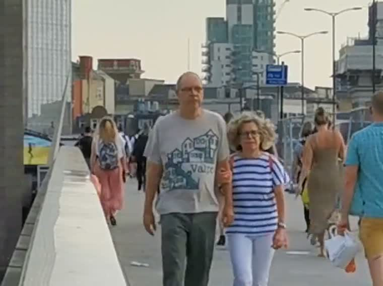
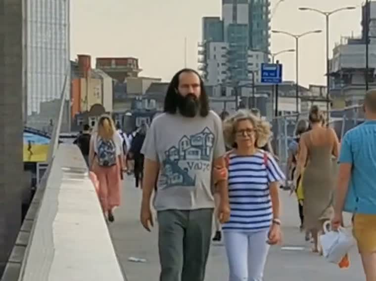

In one of the interviews, Nidžara Ahmetašević, a Bosnian journalist,
emphasized the importance of citizen journalism. She started her
career as a journalist during the siege of Sarajevo when she was
seventeen. She was hungry and in constant danger, while journalists
from big media stayed in safe hotels with plenty of whisky and meat.
Her stance is that big media mostly serve their governments and at
the same time teach local journalists what objective journalism is.
They fail miserably, she says, and we should be listening to local
journalists and local people instead.
I cannot judge that opinion. But I agree citizen journalism is
important and will become even more so. However, how do we trust it, if
anyone can generate whatever photo or video they want?
Sarajevo, 1996SSGT Louis Briscese, USAF / public domain
Then generative AI arrived
Now anyone can produce footage of something that never happened.

Original✓ Authentic

AI face swap✕ Not authentic
Same bridge, same second, same shirt. One man got a different face.
Looking is no longer a test. And the people who lose first are the ones
whose only claim was “I was there, this is what I saw.”
What we build
Trust photos and videos you see.
Prove what was edited.
Open software so anyone can check that a video was signed inside the
camera, and that later edits were only the ones claimed.
01
Sign at capture
Hardware binds the signature to the real pixel stream, before software can invent bytes.
02
Prove what changed
A zero knowledge proof covers the edit, so the original can stay private.
03
Check for yourself
Anyone verifies the published file against the proof, in a second or two.
Eva vs zk-Cinema
What does the camera sign, and what do you have to keep around to publish?
Eva
zk-Cinema
Camera signs
Hash of the pixels
Commitment to the video
You keep
The published video, ~30 MB
A lossless master, ~2 GB per 2 min
Viewer gets
Video + proof
Video + proof
The one difference that matters
Eva proves the compressed file the viewer actually receives. zk-Cinema
proves a lossless master, so publishing means hosting a second copy
that outweighs the published file by ~70×, and
trusting someone who eyeballed both.
Distribution
What has to travel with a video
One clip throughout: the paper’s own benchmark, 2 min of 720p at 30 fps.
Raw ~5 GB · lossless ~2 GB · stream ~30 MB. Sizes derived from clip
dimensions; the paper does not state them.
Why Eva pays for it
The codec is inside the proof. That is the expensive part, and also
the reason nothing extra has to be stored or trusted.
Why zk-Cinema skips it
Proving compression is slow, so it proves the edit on lossless
video instead and moves the compression gap to a human.
Shipped today
One person redacted, everything else provably untouched.
Original · stays privatePublished✓ Carries a proof
Proving ~1 hour for a 4K clipChecking 1 to 2 secondsOnly edited frames enter the SNARK
Improvements
Keep the bet that the published file is the proved file. Borrow the rest.
01
Sign a commitment
Both 2026 papers stop hashing at capture and sign a polynomial commitment instead. Far cheaper to prove, 47s down to 2s on a full HD photo, and a weak camera can outsource it.
02
Prove less of the clip
We already skip untouched frames. Proving only the blocks an edit can reach is the same idea taken further: worth a few times, not an order of magnitude.
03
Cover real edits
Blur, resize and sharpen are what newsrooms actually do, and zk-Cinema shows how to make them cheap.
Not the only ones betting this way
SPEG (ePrint 2026/1717) does for JPEG exactly what Eva does for H.264:
prove the lossy transform, leave entropy coding to the standard
decoder, publish one file. Stills only, but independent confirmation
that the split is right.